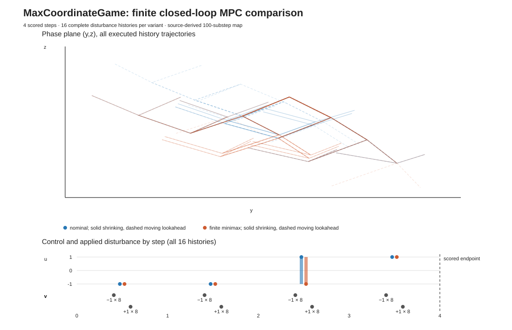

Nominal and finite-catalogue minimax controllers repeatedly plan, execute one action, observe the next state, and replan on a source-derived RL environment.
{−1,+1}, all 16 complete disturbance histories, and the source 100-substep transition. This is a finite adaptation of the continuous-action four-second RL environment. It establishes results only for this finite catalogue; calculations use binary64 arithmetic with tolerance-based independent replay.| Controller | Horizon | Episodes | Median terminal objective | Worst terminal objective | Median solve time / decision | Fallbacks |
|---|---|---|---|---|---|---|
| Nominal, zero disturbance | Shrinking 4→1 | 16 | 0.15107 | 0.50488 | ~0.11 ms | 0 |
| Nominal, zero disturbance | Moving 2-stage | 16 | 0.23826 | 0.50488 | ~0.055 ms | 0 |
| Finite minimax | Shrinking 4→1 | 16 | 0.26772 | 0.50488 | ~0.14 ms | 0 |
| Finite minimax | Moving 2-stage | 16 | 0.26772 | 0.54615 | ~0.067 ms | 0 |
The upstream repository declares no license; this report re-expresses model equations without copying source code. The pinned source is MaxCoordinateGame.py. Objective values are the source terminal max(|y|,|z|). The exact stored per-decision latencies and complete episode rows are in result.json. Timings are descriptive for one Release collection; no performance winner is claimed.

The committed run uses the repository's C++ csl.finite_action_minimax implementation. The Python renderer also has an independent finite-enumeration reference mode. Solve timings are from one collection and are descriptive, with no performance winner claim.
Method and limitations · File hashes · Download offline bundle